EDA y preparación#
Este capítulo integra la exploración inicial con los manifiestos y las máscaras usados en las 25 corridas.
Cuántas imágenes contienen cada categoría#
La tabla cuenta fotografías entre los 1.583 pares con máscara utilizable. Una foto con dos rótulos de la misma categoría cuenta una vez en esa fila. Si contiene dos categorías diferentes, cuenta en ambas filas; por eso la suma de las filas puede superar 1.583. Las 102 imágenes sin máscara quedan fuera de este recuento.
Categoría original |
Total con máscara |
Entrenamiento |
Validación |
Test |
Cuarentena |
|---|---|---|---|---|---|
Explosivo |
210 |
130 |
29 |
27 |
24 |
Oxígeno |
178 |
110 |
29 |
18 |
21 |
Radiactivo |
160 |
96 |
29 |
19 |
16 |
Peligro por inhalación |
158 |
121 |
9 |
11 |
17 |
Gas no inflamable |
146 |
81 |
25 |
18 |
22 |
Sólido inflamable |
132 |
67 |
14 |
30 |
21 |
Peligroso |
126 |
81 |
17 |
20 |
8 |
Peróxido orgánico |
116 |
75 |
11 |
17 |
13 |
Inflamable |
112 |
67 |
11 |
18 |
16 |
Corrosivo |
110 |
74 |
13 |
14 |
9 |
Sustancia infecciosa |
110 |
63 |
13 |
14 |
20 |
Combustión espontánea |
104 |
53 |
21 |
17 |
13 |
Tóxico |
81 |
59 |
9 |
9 |
4 |
La columna Total con máscara reúne entrenamiento (1.015 fotos), validación (218), test (218) y cuarentena (132). Para reconstruir los conteos se cruzó el campo classes de resultados/inicio_voc/inventario.csv con el manifiesto por ID de imagen y se cotejó cada total con distribucion_clases.csv. El fondo es la categoría negativa por píxel y queda fuera de las 13 categorías de rótulos.
Cobertura, geometría y objetivo#
Las 13 categorías que aparecen en las máscaras originales#
¿Qué cuenta como «etiqueta» para la red? En la galería, cada fotografía es un recorte real de entrenamiento. El título traduce el nombre de la categoría; debajo aparece el identificador exacto de la paleta VOC y de la imagen. Para el experimento binario, los píxeles anotados de cualquiera de estas 13 categorías se convierten en 1 (etiqueta) y el fondo en 0. Los nombres proceden del corpus y su equivalencia con divisiones IMO requeriría una revisión específica.
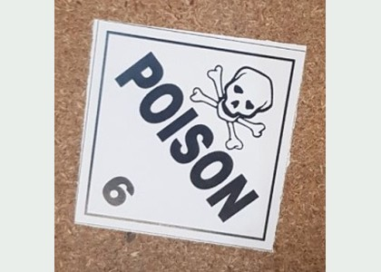
poison · image_0754
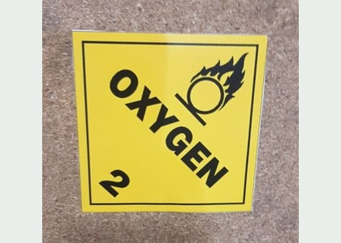
oxygen · image_1546
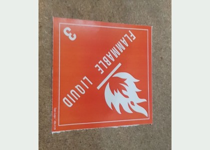
flammable · image_0210
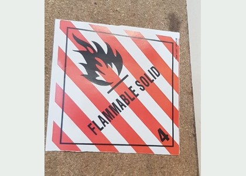
flammable-solid · image_0201
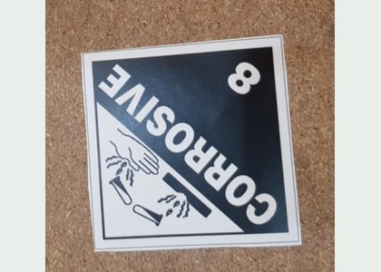
corrosive · image_0681
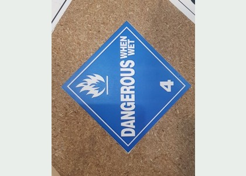
dangerous · image_0949
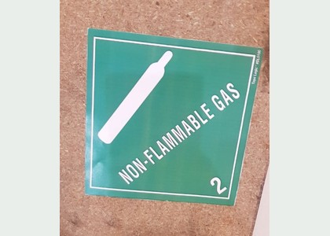
non-flammable-gas · image_0148
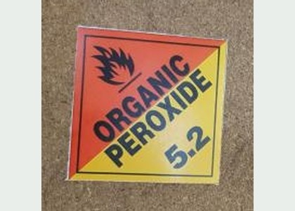
organic-peroxide · image_0113
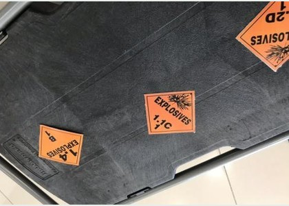
explosive · image_0408
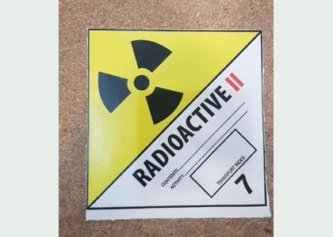
radioactive · image_1287
inhalation-hazard · image_0179
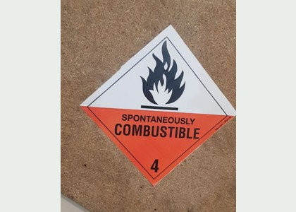
spontaneously-combustible · image_0366
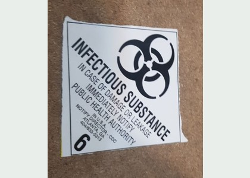
infectious-substance · image_0171
Cómo se eligieron los ejemplos. Para cada categoría se tomó la fotografía elegible de entrenamiento con mayor fracción anotada entre las que tienen solo esa categoría. El recorte abarca sus píxeles y añade un margen de contexto. Así se aprecia el pictograma; la galería sobrerrepresenta deliberadamente los rótulos grandes. Los gráficos siguientes cuantifican el tamaño y el desbalance en las imágenes completas.
Cuánto espacio ocupa una etiqueta#
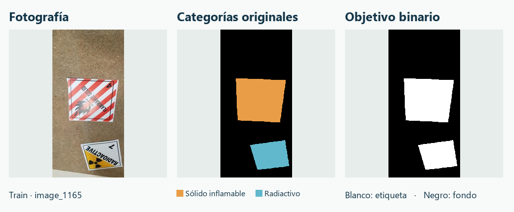
En image_1165, la máscara original distingue sólido inflamable y radiactivo. La columna central usa dos colores de visualización para hacer legible esa diferencia. A la derecha se muestra la máscara binaria guardada que recibió el modelo. Conserva las dos regiones, incluso cuando ya no se puede deducir la clase a partir de sus valores.
La función que construyó la máscara comprueba la paleta antes de asignar 1 a los píxeles anotados. El valor RGB empaquetado cero corresponde al fondo negro.
def binary_mask(mask,colors):
rgb=np.asarray(mask.convert('RGB'))
packed=rgb[:,:,0].astype(np.uint32)*65536+rgb[:,:,1].astype(np.uint32)*256+rgb[:,:,2]
allowed=[r*65536+g*256+b for r,g,b in colors]
if not np.isin(packed,allowed).all():raise ValueError('Color desconocido; no convertir automáticamente')
return (packed!=0).astype(np.uint8)
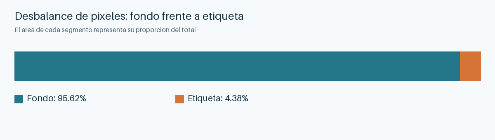
El fondo domina el recuento. Un clasificador que declarase fondo en todos los píxeles alcanzaría una exactitud alta y perdería el rótulo entero. Se eligió Dice de etiqueta como métrica primaria y se combinó Dice suave con BCE en la pérdida.
De los conteos al porcentaje. eda_entregable.py lee los píxeles por categoría de los 1.583 pares válidos en resultados/inicio_voc/resumen.json. La variable fg es la fracción de píxeles de etiqueta; multiplicarla por 100 produce el 4,38 % reportado.
counts = json.loads((initial/"resumen.json").read_text())["pixel_counts_valid_pairs"]
fg = 1-counts["background"]/sum(counts.values())
entropy = -fg*np.log2(fg)-(1-fg)*np.log2(1-fg)
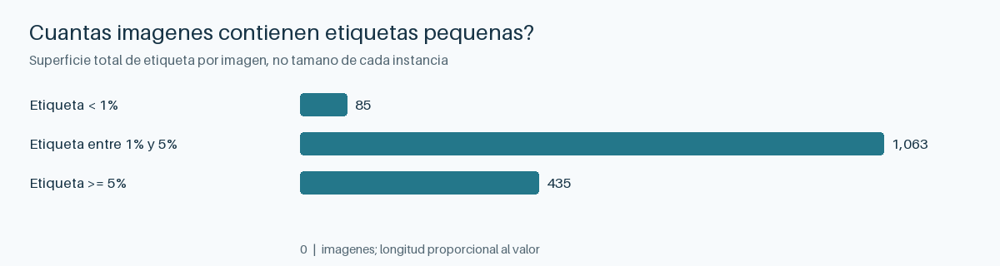
Las imágenes con área positiva pequeña son especialmente sensibles a la reducción espacial. La medida se refiere a la suma de área etiquetada por imagen. Más abajo se cuantifican también las regiones individuales que llegan al modelo.
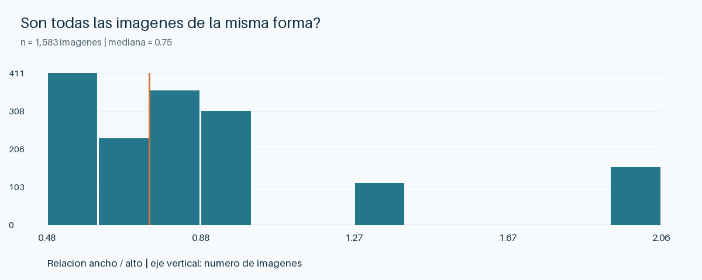
Los encuadres tienen distintas proporciones. Se preservó la relación de aspecto con redimensionado y relleno centrado. Imagen y máscara comparten la geometría; la imagen usa interpolación bilineal y la máscara, vecino más cercano. Los píxeles de relleno se excluyen del entrenamiento y la evaluación.
Calidad de las anotaciones#
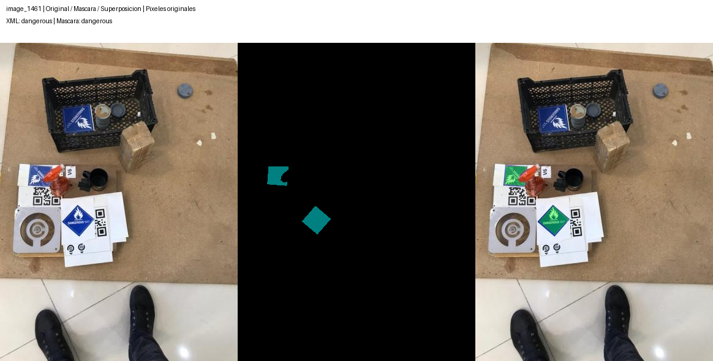
En la cesta se distingue un rótulo aparentemente omitido mientras dos rótulos inferiores sí tienen máscara. Esta clase de error persiste al binarizar. Se puso el grupo en cuarentena. En image_0025 la discrepancia parece semántica y en image_1251 la mano oculta parte de las etiquetas. Los paneles se eligieron para diagnóstico, por lo que su frecuencia de problemas no estima una tasa de error poblacional.
De los 1.685 JPG, 102 carecen de máscara utilizable. Los 102 figuran sin asignación en las particiones heredadas y con origen XML desconocido. Entre los 1.583 pares con máscara solo uno tiene origen desconocido. La ausencia se concentra en un subconjunto identificable; estos metadatos no bastan para explicar la causa. Se excluyeron de la supervisión, sin convertirlos en ejemplos de fondo. En 69 pares no coinciden los conjuntos de clases XML y máscara. También falta el XML de image_1018. La cuarentena incluye alertas de cobertura inferior al 5 % en cajas y se propaga dentro del grupo. No existe una segunda anotación independiente para estimar acuerdo o un techo de Dice humano.
Similitud, procedencia y fugas#
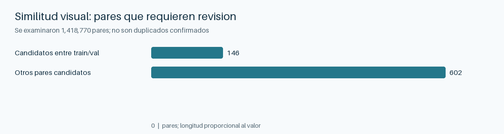
De 1.418.770 pares examinados, 748 cumplieron simultáneamente distancias dHash y aHash de hasta 6 bits sobre 64. De ellos, 146 cruzaban entrenamiento y validación heredados, aunque no se encontraron JPG ni matrices RGB exactamente iguales. Doce pares revisados mostraron composiciones casi coincidentes. La decisión fue mantener juntas las componentes conexas de todos los enlaces candidatos. En la nueva asignación cruzan particiones cero enlaces conocidos. Rotaciones y recortes podrían escapar a estos hashes.
En la validación heredada, 33 imágenes provenían de la carpeta XML 00_javad y 151 de 00_misaq. Una carpeta puede compartir fondos con otra. Esta concentración y la falta de identificadores certificados de cámara o escena limitan la interpretación del origen. Un grupo visual aproxima dependencia sin garantizarla.
En los 1.583 pares originales, la etiqueta ocupa 4.38 % de los píxeles y el fondo 95.62 %. La razón fondo/etiqueta es 21.8 y la entropía binaria es 0.260 bits por píxel.
Regiones que llegan al modelo#
En las 1.015 máscaras de entrenamiento a 256 × 256, la mediana de componentes por imagen es 1. Hay 1709 regiones de ocho vecinos. Los percentiles 10, 50 y 90 de área son 219.0, 719.0, 2943.8 píxeles. La razón mediana entre el lado largo y el corto de su caja envolvente es 1.07. Una componente puede reunir rótulos en contacto o dividir uno ocluido. El área total de etiqueta nunca baja de 16 píxeles en las máscaras de entrenamiento a esta resolución, pero componentes individuales pueden ser menores. Esto sustenta conservar el encuadre y medir solapamiento de la clase pequeña.
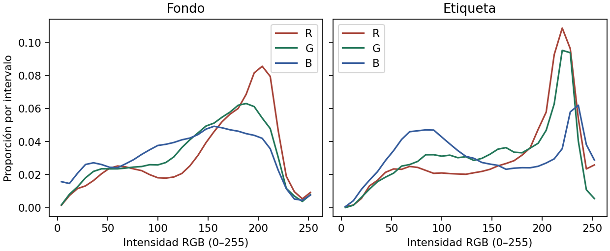
Las intensidades de etiqueta y fondo se solapan en los tres canales. Un umbral de color único perdería parte de ambas distribuciones. Para normalizar se usaron exclusivamente píxeles válidos de train, con medias RGB 0,604/0,561/0,507 y desviaciones 0,233/0,227/0,240.
Comparación de las particiones congeladas#
Partición |
Imágenes |
Grupos |
Mediana fracción etiqueta |
Ancho mediano |
Alto mediano |
Brillo medio por grupo |
|---|---|---|---|---|---|---|
train |
1015 |
567 |
0,0317 |
520 |
750 |
0,5449 |
val |
218 |
122 |
0,0285 |
520 |
749 |
0,5453 |
test |
218 |
122 |
0,0267 |
520 |
750 |
0,5287 |
El test tiene menor fracción mediana de etiqueta que train. Para el brillo de miniaturas se compararon las medias de grupo entre las tres particiones. El estadístico es la suma de desviaciones cuadráticas de cada media de partición respecto de la global, ponderadas por el número de grupos. Una permutación exploratoria de etiquetas de partición entre grupos, conservando sus tamaños en número de grupos (4.999 permutaciones, semilla 20261107), da p = 0,5068. El diagnóstico cubre un atributo y presupone intercambiabilidad de grupos. Ni un brillo similar ni el resultado de esta prueba certifican igualdad de dominio. Se conservaron las particiones originales del experimento.
Diagnósticos adicionales sobre el corpus#
Categoría |
Píxeles |
% del total |
|---|---|---|
poison |
976074 |
0.1267 |
dangerous |
1430437 |
0.1856 |
organic-peroxide |
1538311 |
0.1996 |
corrosive |
1700992 |
0.2207 |
flammable |
1971806 |
0.2559 |
spontaneously-combustible |
2036709 |
0.2643 |
infectious-substance |
2626241 |
0.3408 |
flammable-solid |
2652673 |
0.3442 |
non-flammable-gas |
3318110 |
0.4306 |
inhalation-hazard |
3355659 |
0.4355 |
explosive |
3811887 |
0.4947 |
oxygen |
4110704 |
0.5334 |
radioactive |
4231863 |
0.5492 |
background |
736827254 |
95.6187 |
Denominador: píxeles de todos los pares con máscara válida, antes de la partición. La categoría poison tiene la menor representación; su conteo no equivale al número de grupos independientes.
Ausencia de máscaras#
En 1685 imágenes con características se observan 102 máscaras ausentes. Asociación exploratoria con la carpeta de origen: χ²=1667.59, gl=7, p=0. Las celdas pequeñas y la dependencia entre imágenes relacionadas limitan la prueba. Una asociación observada cuestiona MCAR; no identifica MAR ni descarta MNAR.
¿Se distinguen train y test?#
Clasificador logístico de partición con tamaño, brillo, contraste y fracción de etiqueta; predicción fuera de muestra en cinco pliegues agrupados. AUC=0.506 (azar: 0,5). Se usa como diagnóstico retrospectivo, sin cambiar la partición ni entrenar el segmentador con test.
Variable |
D de KS |
p nominal por imagen |
|---|---|---|
width |
0.0226 |
1.0000 |
height |
0.0257 |
0.9996 |
brightness_thumb |
0.0737 |
0.2685 |
contrast_thumb |
0.1261 |
0.0060 |
foreground_fraction |
0.1240 |
0.0072 |
Los valores p de KS son descriptivos: no corrigen la dependencia intragrupo. La fracción anotada solo se usa para diagnosticar diferencias de composición.
Decisión de preprocesamiento: conservar encuadre y proporción con letterbox de 256 × 256; mantener la máscara discreta y excluir relleno. Impacto en la arquitectura: combinar detalle local con contexto sin introducir nuevas transformaciones en la comparación. Riesgos: los objetos pequeños pierden detalle y la procedencia podría actuar como atajo. La estabilidad del umbral y del grupo de similitud no está garantizada en otro puerto.